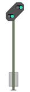

|
|
| Sie nähern sich dem Vorsignal des Einfahrsignals des Bahnhofs Altenbeken. Drei verschiedene Signalbilder können Sie dort erwarten (wegen der Lage im Tunnel sehen Sie natürlich nur die Lampen und diese sind wegen der engen Einbausituation etwas verschoben): |
 Das in ca. 1000m folgende
Hauptsignal zeigt Halt: Das in ca. 1000m folgende
Hauptsignal zeigt Halt:Drücken Sie unmittelbar nach Passieren des Vorsignals Indusi-Wachsam (Enter-Taste im Zehnerblock). Die gelbe 1000Hz-Leuchte muß
aufleuchten. |
 Das in ca. 1000m folgende
Hauptsignal zeigt Langsamfahrt (40km/h): Das in ca. 1000m folgende
Hauptsignal zeigt Langsamfahrt (40km/h):Drücken Sie unmittelbar nach Passieren des Vorsignals Indusi-Wachsam (Enter-Taste im Zehnerblock). Die gelbe 1000Hz-Leuchte muß aufleuchten. Bremsung einleiten |
 Das in ca. 1000m folgende Hauptsignal zeigt Fahrt:Sie dürfen mit Streckengeschwindigkeit weiterfahren (hier 80km/h) |